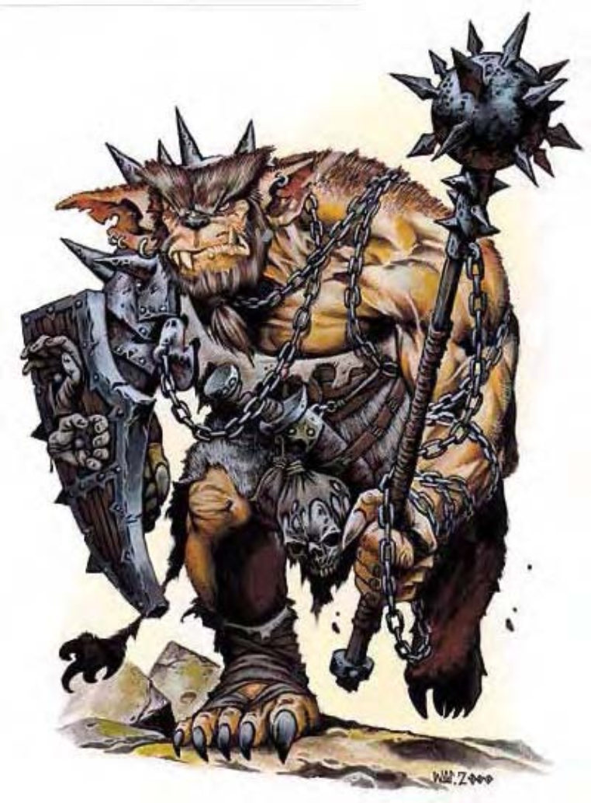

| 资料栏位 | 熊地精 (Bugbear) 中型人形生物 (类地精) |
|---|---|
| 生命骰 | 3d8+3 (16HP) |
| 先攻 | +1 |
| 速度 | 30英尺 (6格) |
| 防御等级 | 17 (+1敏捷、+3天生、+2皮甲、+1轻型木盾)、接触11、措手不及16 |
| 基本攻击/擒抱 | +2 / +4 |
| 攻击 | 钉头锤+5近战 (1d8+2)；或标枪+3远程 (1d6+2) |
| 全力攻击 | 钉头锤+5近战 (1d8+2)；或标枪+3远程 (1d6+2) |
| 占据/触及 | 5英尺/5英尺 |
| 特殊攻击 | ― |
| 特殊能力 | 黑暗视觉60英尺、灵敏嗅觉 |
| 豁免 | 强韧+2、反射+4、意志+1 |
| 属性 | 力量15、敏捷12、体质13、智力10、感知10、魅力9 |
| 技能 | 攀爬+3、躲藏+4、聆听+4、潜行+6、侦察+4 |
| 专长 | 警觉、专攻武器 (钉头锤) |
| 环境 | 温带山脉 |
| 组织 | 单独、成队 (2-4) 或一团 (11-20加上150%非战斗人员加上2个2级军士与1个2至5级干部) |
| 挑战级数 | 2 |
| 宝藏 | 标准 |
| 阵营 | 通常混乱邪恶 |
| 进化 | 视人物职业而定 |
| 等级修正值 | +1 |
强壮而野蛮的人形生物，约7英尺高。粗糙的毛发几乎覆盖全身。嘴里长满长尖牙，鼻子像熊。熊地精是类地精生物中体型最大、最强壮的，也最具侵略性。它们以猎杀比自己弱小的生物为生。熊地精的名称由其鼻子而来，不过，熊地精和熊没有关系。熊地精的皮肤和利爪也和熊类似，手则比熊灵活得多。然而熊地精的爪子太短，无法当作有效武器。熊地精通晓地精语和通用语。
战斗只要状况允许，熊地精倾向埋伏以攻击对手。出猎时，他们通常于队伍前部署斥候，一旦发现猎物，便回报并带上增援。熊地精的攻击是有组织的，虽算不上聪明，但战术尚称周全。
技能：熊地精在进行“潜行”检定时具有+4种族加值。
熊地精喜欢住在洞穴散布的温带山脉区域，以小部落为单位聚居，并由单一熊地精领导（通常是当中最强壮、最卑鄙者）。部落里，成人与非成人各半。非成人并不随队外出打猎，但要保护自己或部落时，也会挺身战斗。熊地精的人生只有两个目标：食物与宝藏。猎物与入侵者则是达成上述目标的方便途径。极度贪婪的熊地精会夺取任何发亮物品，包括武器与防具。他们决不放弃任何透过偷窃、掠夺、偷袭以增加财宝的机会。在相信可获得好处的极少数情况下，熊地精会与其他生物交涉。然而他们不擅此道，时间一拖长便很快失去耐性。熊地精偶尔率领地精或大地精，但对待方式极为粗暴无情。熊地精主要靠打猎为生，差不多什么都吃。任何生物都是良好的食物来源，包含怪物、甚至其他较小的类地精生物。食物来源不足时，熊地精会转而进行掠夺、偷袭以填满饭锅。大部分的熊地精信仰鲁基哥（喜欢偷袭与残酷战斗的神�o）。
熊地精的人物大部分的熊地精是战士或战士兼游荡者。熊地精牧师信仰鲁基哥，可由下列领域择二：混乱、邪恶、诡术、战争。
熊地精人具有下列种族特性：